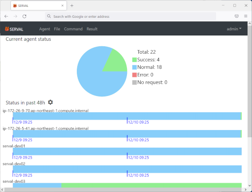

SERVAL 1.0.0
SERVAL概要
SERVALは、サーバ／IoTデバイスの監視・管理ソフトウェアです。WindowsバッチファイルやLinuxシェルスクリプトをリモートから定義・実行することにより、サーバ/IoTデバイスの柔軟な監視・管理を行うことができます。
SERVALは、管理コンソールを提供するSERVALサーバと、サーバ/IoTデバイスにインストールするSERVALエージェントから構成されます。
SERVALには以下の特徴があります。
- Webブラウザから接続可能な管理コンソールを提供します。
- 最大90台のサーバ/IoTデバイスを管理することができます。
- 管理コンソールのすべての操作はスマートフォンでも行うことができます。
- SERVALサーバからSERVALエージェントへのファイル転送、スクリプト実行、SERVALエージェントからSERVALサーバへのファイル転送 をひとつのセットとするコマンドを定義することにより、様々な監視・管理の操作を行うことができます。
- SERVALは、サーバ/IoTデバイスの監視を目的としたコマンドの定期実行機能と、管理を目的としたコマンドの即時実行機能を提供します。
- SERVALサーバとSERVALエージェント間のコネクションは、SERVALエージェントからSERVALサーバの向きで確立されます。 管理対象のサーバ/IoTデバイス側の受信ポートを開くことが無いため、セキュアな監視・管理を行うことができます。

例 : SERVALに管理されるエージェント一覧
例 : ダッシュボード

例 : コマンド実行結果
システム要件
SERVALは以下の環境で動作します。- 動作に必要なCPU: 2GHz以上のクロック周波数で動作するCPU
- 動作に必要なメモリ容量: 1GBytes以上
- 導入に必要な空きディスク容量: 20MBytes以上
- サポートするオペレーティングシステム:
SERVALサーバ
Windows 10
Windows 11
Windows Server 2016
Windows Server 2019
SERVALエージェント
Windows 10
Windows 11
Windows Server 2016
Windows Server 2019
Redhat Enterprise Linux 8.x
AlmaLinux 8.x
- サポートするWebブラウザ:
Microsoft Edge
Google Chrome
Mozilla Firefox
ダウンロード
1.0.0 Release: 2021/12/12 Windows edition Linux edition